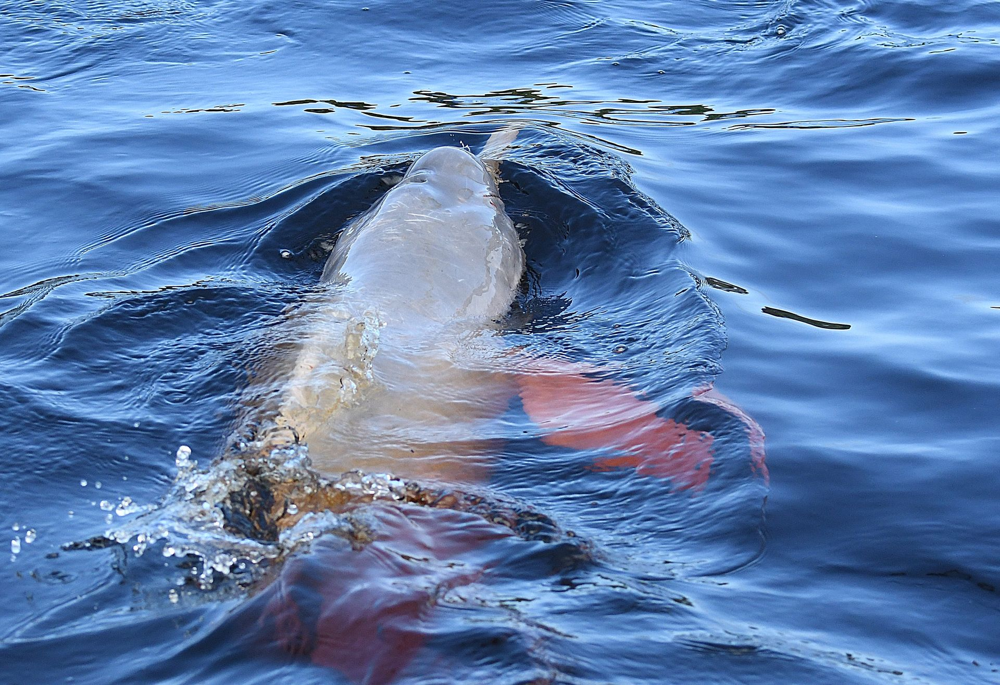

Pink river dolphins — boto, in Brazilian Portuguese — are found throughout the Amazon and Orinoco river basins. Near Manaus, the best places to encounter them are the Encontro das Águas, the Anavilhanas Archipelago, and the igapó channels of the Rio Negro. They are most active during the high-water season from January to May, when they hunt through flooded forest.
What the boto actually is
The Amazon river dolphin, Inia geoffrensis, is a freshwater cetacean — it never enters the sea. It is the largest of the world's four freshwater dolphin species, reaching up to 2.5 metres in length and 185 kilograms. Males are generally larger than females and develop a more intense pink colouration with age, caused by blood vessels close to the skin surface combined with scar tissue from territorial encounters.
Young boto are grey. As they age, the grey fades and the pink intensifies. Not all individuals are the same shade — some are pale pink, others a vivid rose. The colouration varies by individual, age, and excitement level: a boto flushed from a sprint will be briefly more pink than one resting.
Boto — Quick Facts
Unlike oceanic dolphins, the boto has a flexible neck — its cervical vertebrae are not fused — allowing it to turn its head 90 degrees. This adaptation lets it manoeuvre through submerged tree roots and flooded vegetation to hunt fish that hide in the understorey. It is one of the few mammals on earth whose anatomy is directly shaped by seasonal flooding.
The boto is also one of the most intelligent non-human animals in South America. Its brain is significantly larger relative to body size than other river dolphins. It uses echolocation to navigate black-water rivers where visibility is near zero — producing a complex system of clicks and whistles to detect prey and communicate.

Where to find pink dolphins near Manaus
The Manaus region offers several reliable boto locations, accessible by day tour or as part of a multi-day expedition.
Encontro das Águas
~30 min from Manaus by boat
The confluence of the dark Rio Negro and the turbid-brown Rio Solimões — one of the most photographed natural phenomena in South America. Boto congregate at this boundary because the prey fish are abundant here, moving between the two water types. Most river day tours from Manaus pass through this area.
Anavilhanas Archipelago
~2 hours from Manaus by boat
The world's largest freshwater archipelago — over 400 islands in the Rio Negro. The labyrinth of igapó channels between the islands is outstanding dolphin habitat, particularly during high water. Our Anavilhanas day tour and Amazon Explorers multi-day both operate in this area.
Rio Negro igapó channels
1–4 hours from Manaus
During the high-water season, flooded igapó channels along the Rio Negro become dolphin hunting grounds. You encounter them by canoe, at close range, as they manoeuvre between tree trunks. This is a qualitatively different experience from watching them on open water — the proximity and behaviour you observe are extraordinary.
Novo Airão area
~2.5 hours from Manaus by road or boat
The small town of Novo Airão has a controversial wild dolphin feeding station — we do not visit it for the reasons described below. However, the surrounding Rio Negro channels north of the town are genuine boto habitat and worth exploring on a multi-day expedition.
Best season to see pink river dolphins
Boto are present in the Rio Negro region year-round — they do not migrate. What changes seasonally is their behaviour and accessibility.
High water season (January–June) is generally considered the best time for dolphin encounters. As floodwater rises and fish disperse through the igapó, the boto follow them into the forest. You encounter them in contexts you cannot access at other times: navigating between submerged tree trunks, hunting in shallow flooded forest, and surfacing in tight channels where a canoe can approach without disturbing them. The dolphins are actively hunting, which means more visible surface behaviour — leaping, chasing, socialising.
Low water season (July–November) concentrates dolphins at river confluences, mouths of igarapés (small streams), and lake edges where fish are abundant. You see them on the surface of open rivers rather than in the forest, which can make for easier photography but less intimate encounters. Numbers visible at any one point may be higher than during flooding.
Neither season produces "no dolphins." Over many years guiding in the Rio Negro, we have never led a trip where boto were not encountered. The question is where and how you find them — not whether.
"Every tour we run on the Rio Negro includes boto encounters. The question we ask before a trip is not 'will we see dolphins?' — it's 'in what context will we see them, and what do we want to show the group?'"

On responsible observation — and what to avoid
There is a practice common at some tourist operations in the Manaus region, most notably at Novo Airão, where fish are thrown into the water to attract wild boto close to a floating platform, allowing tourists to touch them. It is one of the most-photographed Amazon tourist experiences. We consider it ecologically harmful and do not participate in it.
Why we don't visit feeding stations: Wild boto habituated to human food become dependent on it and lose natural foraging behaviour. They associate boats and humans with food — changing their spatial behaviour and making them more vulnerable to boat strikes and fishing gear entanglement. The practice is widespread but its long-term effects on individual dolphins are well-documented. Brazilian law prohibits feeding wild dolphins; enforcement is inconsistent.
Responsible boto observation means watching them in their own habitat, on their own terms. On a canoe in igapó channels during the high-water season, a boto may surface a metre from you — not because it is attracted by food, but because it is following fish through the same channel you're paddling. That encounter is both more ecologically sound and, in our view, more meaningful.
Our protocol: when a dolphin approaches the canoe, we stop paddling and remain still. We do not pursue or crowd dolphins. We do not play recordings of dolphin sounds. We observe, point out behaviour, and explain what we're seeing.
Tours that include pink dolphin encounters
All of our river-based tours include boto encounters as a natural element of the itinerary. The following tours are specifically structured around dolphin habitat:
- Pink Dolphins & Indigenous Village — day tour with boat excursion to the Encontro das Águas and a river community
- Pink Dolphins & Anavilhanas — day tour through the Anavilhanas Archipelago, the most dolphin-rich area near Manaus
- Amazon Explorers — 5-day multi-day tour with canoe time in igapó channels and Anavilhanas
- Chlorophyll — 6-day Rio Negro expedition focused on flooded-forest ecosystems; excellent boto encounters in igapó
- River Explorer — 5-day boat-based expedition covering multiple Rio Negro tributaries
Photography note: Boto surface briefly and unpredictably. The best approach is a long lens (200mm+), burst mode, and patience — focus on the surface and wait. The high-water season gives the best close-range opportunities because you're on a canoe, not a motor boat. Motor engines cause dolphins to dive.
Conservation status
The boto was uplisted to Endangered on the IUCN Red List in 2018. The primary threats are mercury contamination from illegal gold mining (artisanal mining, or garimpagem, has accelerated significantly in the Brazilian Amazon), entanglement in fishing nets, boat strikes, and — less quantified but increasingly concerning — the deliberate killing of dolphins for use as catfish bait, which has been documented in several Amazon tributaries.
The boto has additional legal protection in Brazil since 2014 under a Ministry of Environment decree that prohibits any intentional killing, capture, or harassment of the species. Despite this, populations in several tributaries have declined measurably.
In the Rio Negro region around Manaus — particularly in and around the Anavilhanas Ecological Station — boto populations remain healthy. The area has lower levels of artisanal gold mining than the western Amazon, and the existing tourism infrastructure has created some economic incentive for local communities to protect rather than exploit the species. These are not guarantees, but they are relative advantages that make the Manaus region one of the more reliable places in the Amazon to observe boto in good numbers.